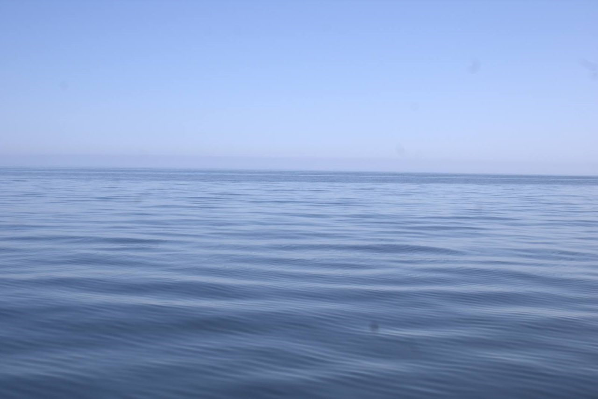

Whale behaviour
Investigating behavioural patterns and the ways North Atlantic right whales use their environment.
Exploring the behaviour and foraging ecology of one of the world's most endangered whale species through marine research and data-driven approaches.
Explore my research ↓
I am a PhD student at Dalhousie University studying North Atlantic right whale behaviour and foraging ecology. My research focuses on understanding how these animals behave and interact with their marine environment. Understanding their ecology is important for improving our knowledge of this endangered species and the challenges it faces.
Investigating behavioural patterns and the ways North Atlantic right whales use their environment.
Exploring feeding ecology and the relationship between whales, prey and their surrounding habitat.
Applying computational and analytical approaches to marine research questions and ecological data.
My research interests span important marine regions of the Northwest Atlantic.
New Brunswick and Nova Scotia, Canada.
Gulf of St. Lawrence, Canada.
Northwest Atlantic, between Canada and Greenland.
Explore some of the interactive applications and computational tools I have developed.
An interactive application exploring signal simulation and data analysis.
Open application ↗An interactive application for exploring and visualising plankton-related data.
Open application ↗My research is connected to the wider marine science community. I work alongside researchers and collaborators contributing to our understanding of whale ecology and conservation.